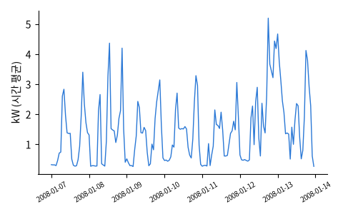

사진: Novoklimov · CC BY 4.0
사진: Novoklimov · CC BY 4.0어떤 문제인가
입력 X지난 몇 시간 · 어제 같은 시각 · 지난주 같은 시각 · 시각 · 요일
→ 모델 →회귀 (시계열)
출력 y (기대하는 답)다음 한 시간 평균 사용량 (kW)
데이터
UCI Individual Household Electric Power Consumption · 약 20MB (압축)
Hebrail & Berard (2012). 프랑스 한 가정의 2006-12 ~ 2010-11 1분 간격 전력 사용량 약 207만 줄 (전체 · 부엌 · 세탁실 · 냉난방 계량기)

무작위로 뽑은 몇 줄
| Date | Time | Global_active_power | Global_reactive_power | Voltage | Global_intensity | Sub_metering_1 | Sub_metering_2 | Sub_metering_3 |
|---|---|---|---|---|---|---|---|---|
| 30/3/2008 | 21:12:00 | 3.112 | 0 | 236.6 | 13.2 | 1 | 0 | 17 |
| 29/4/2010 | 09:29:00 | 2.21 | 0.246 | 239.6 | 9.2 | 0 | 1 | 18 |
| 31/7/2009 | 00:05:00 | 0.666 | 0.078 | 242.3 | 2.8 | 0 | 0 | 0 |
| 2/6/2010 | 09:08:00 | 1.292 | 0.058 | 238.3 | 5.4 | 0 | 1 | 18 |
| 25/1/2007 | 21:13:00 | 1.964 | 0.076 | 242.1 | 8.2 | 0 | 0 | 18 |
| 21/1/2009 | 21:19:00 | 3.586 | 0 | 241.1 | 15 | 0 | 0 | 18 |
데이터 통계
200,000줄 (데이터 파일의 줄 수. 문제의 '한 행' 은 아래 예시에서 따로 정한다)
8열
| 열 | 종류 | 빈칸 | 고유값 수 | 범위 · 대표값 |
|---|---|---|---|---|
| Global_active_power | 숫자 | 1.2% | 3333 | 0.076 ~ 10.54 (평균 1.091) |
| Global_reactive_power | 숫자 | 1.2% | 434 | 0 ~ 1.192 (평균 0.1238) |
| Voltage | 숫자 | 1.2% | 2466 | 223.2 ~ 253.4 (평균 240.8) |
| Global_intensity | 숫자 | 1.2% | 193 | 0.2 ~ 45.8 (평균 4.625) |
| Sub_metering_1 | 숫자 | 1.2% | 78 | 0 ~ 87 (평균 1.134) |
| Sub_metering_2 | 숫자 | 1.2% | 79 | 0 ~ 79 (평균 1.304) |
| Sub_metering_3 | 숫자 | 1.2% | 32 | 0 ~ 31 (평균 6.436) |
| time | 날짜 | 0 | 200,000 | 2006-12-16 17:24:00 ~ 2010-11-26 20:52:00 |
데이터 모양 보기
주별 평균 사용량
여름에 적고 겨울에 많다 (8월엔 휴가로 거의 비어 있다)
시각별 평균
아침 · 저녁에 봉우리
문제를 정해 본 예시
| ① 한 행 | 한 시간 |
| ② 입력 X | 지난 몇 시간 · 어제 같은 시각 · 지난주 같은 시각 · 시각 · 요일 |
| ③ 출력 y | 다음 한 시간 평균 사용량 (kW) |
| ④ 평가지표 | MAE · RMSE |
| ⑤ 기준선 | 지난 한 시간 그대로 · 어제 같은 시각 |
문제를 정할 때 처음 채워 보는 칸들입니다. 여기서 끝이 아니라, 시험 데이터를 어떻게 나눌지 · 틀렸을 때 손해가 얼마인지 · 예측 시점에 정말 알 수 있는 값인지 같은 칸을 더 붙일수록 좋은 문제가 됩니다.
노트북에서 나온 결과 (기준선 vs 모델)
last hour MAE 0.408 kW RMSE 0.619 kW same hour yesterday MAE 0.556 kW RMSE 0.821 kW gradient boosting MAE 0.348 kW RMSE 0.499 kW
평가지표 수식
MAE평균적으로 얼마나 틀렸나 (y 와 같은 단위)
\text{MAE} = \frac{1}{n}\sum_{i=1}^{n} \lvert y_i - \hat y_i \rvert
RMSE크게 틀린 것에 더 큰 벌을 준다
\text{RMSE} = \sqrt{\frac{1}{n}\sum_{i=1}^{n} (y_i - \hat y_i)^2}
관련 데이터
논문 · 출처
누가, 왜, 어떻게 만든 데이터인지 직접 확인해 보세요.
이 데이터에 관심 있을 곳
- 업종
- 전력 · 에너지 공기업, 스마트홈 · 가전, 에너지 거래 플랫폼
- 직무
- 에너지 데이터 분석가, 수요예측 데이터 사이언티스트
인턴 · 산학협력 · 프로젝트 주제를 고를 때 참고하세요 (일반적인 예시).